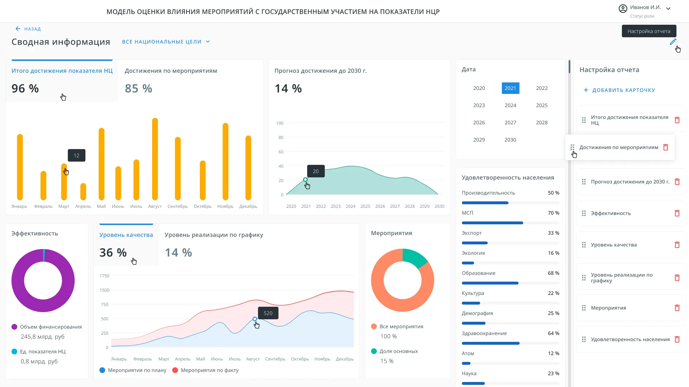
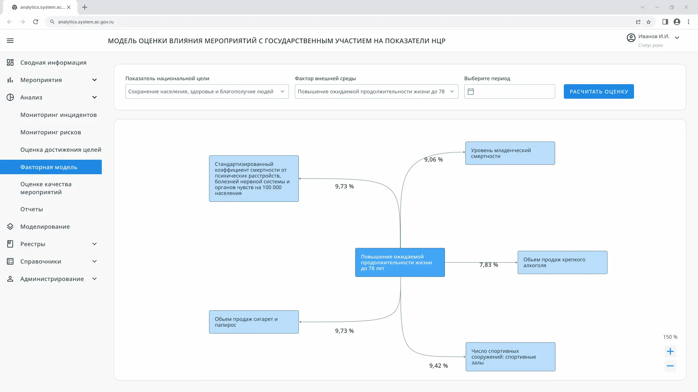
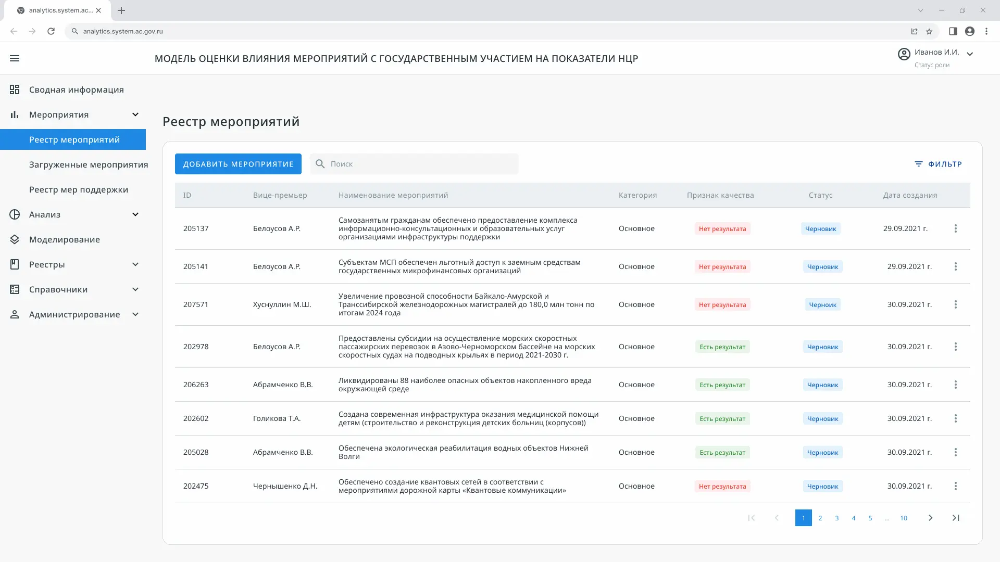
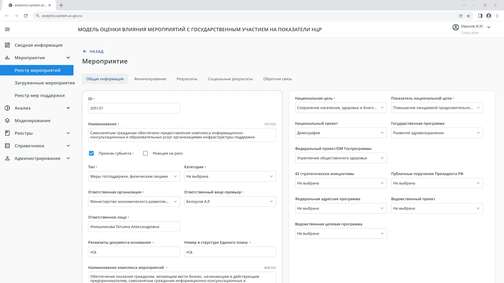
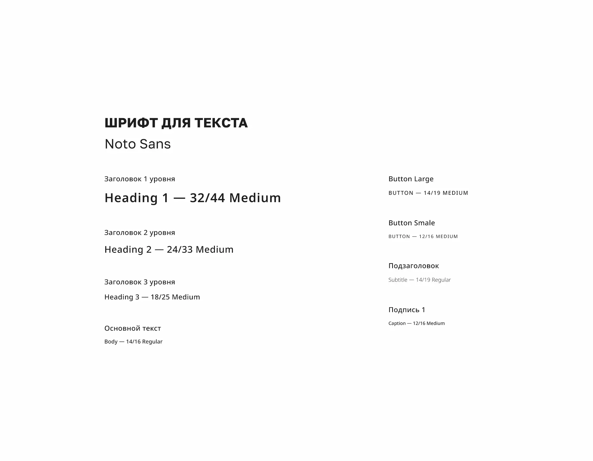
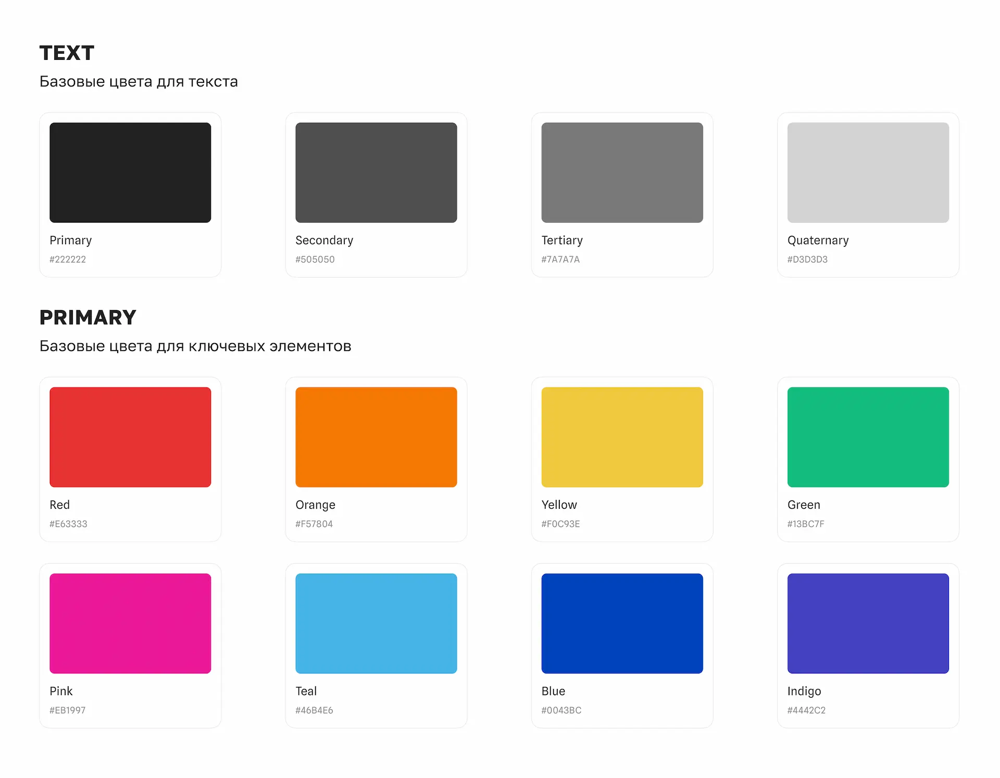
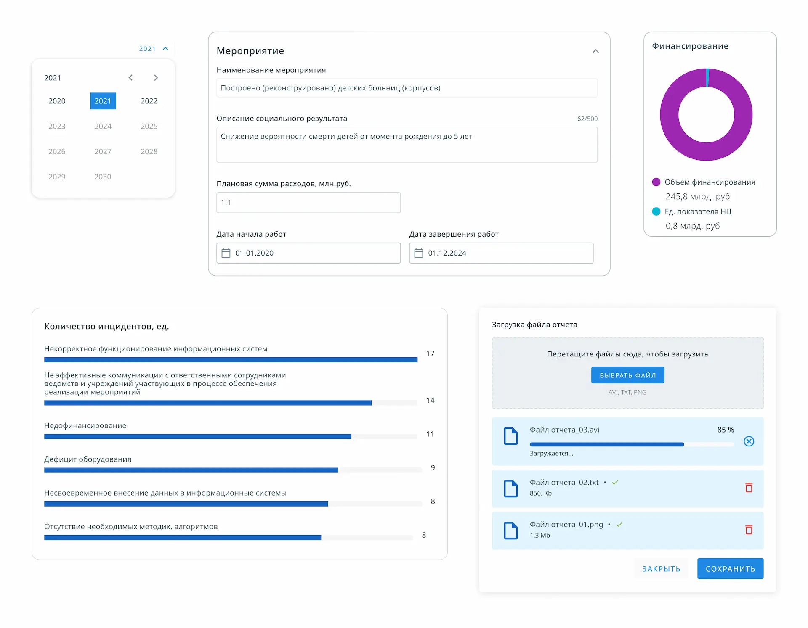
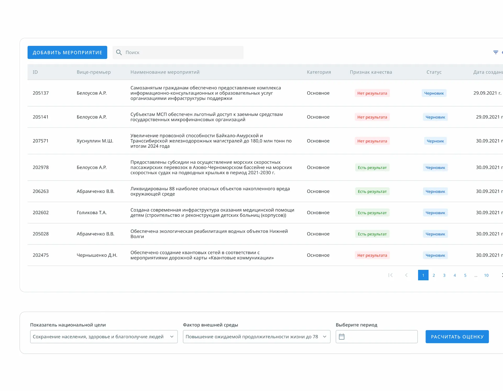

Резюме
Контекст
Аналитическая система — это web-сервис для мониторинга достижения национальных целей за счёт реализации мероприятий и анализа факторов внешней среды.
Система включала:
- сводный дашборд на главной странице
- многоуровневую навигацию с разделами и подразделами
- формы, таблицы и аналитические модули для работы с данными
Система позволяла агрегировать данные по мероприятиям, анализировать показатели, отслеживать риски и формировать управленческую аналитику.
Роль
- Проектирование архитектуры интерфейса аналитической системы.
- Разработка UX/UI решений и пользовательских сценариев.
- Создание и развитие UI Kit.
- Проектирование дашбордов, форм, таблиц и навигации.
- Структурирование сложных аналитических данных совместно с аналитиком.
Архитектура интерфейса была предложена мной самостоятельно на основе анализа предметной области, изучения практик построения аналитических систем и понимания масштабируемости продукта.
UX-вызовы
- Высокая степень неопределённости требований на старте проекта.
- Отсутствие чётко сформулированных пользовательских сценариев.
- Большой объём аналитических данных и сложные взаимосвязи между ними.
- Необходимость проектировать систему с учётом дальнейшего масштабирования.
Значительная часть требований формировалась в процессе обсуждений и рабочих сессий с заказчиком и аналитиками.
Решения
Интерфейс системы был построен по классической для аналитических систем схеме: верхняя шапка с настройками и профилем пользователя, левое навигационное меню и центральная рабочая область с динамически изменяемым контентом.
Архитектура дашбордов позволяла компактно размещать ключевые показатели, сохранять читаемость данных и обеспечивать целостное восприятие аналитической картины уже с первого экрана.
Были реализованы паттерны фильтрации, сортировки и закрепления колонок, а также удобная навигация по данным, что легло в основу табличных интерфейсов системы.
Формы проектировались с акцентом на удобство заполнения, валидацию данных, использование подсказок, масок и выпадающих списков, что позволяло снизить вероятность ошибок.
Примеры интерфейса
Интерфейсы проектировались в тесном взаимодействии с аналитиками и разработчиками, с фокусом на снижение ошибок и удобство ежедневной работы пользователей




UI Kit
UI Kit стал базой не только для этого проекта, но и для других проектов в Аналитическом центре




Результаты
- Была разработана полноценная аналитическая система для мониторинга национальных целей.
- Система позволяла агрегировать и анализировать данные по мероприятиям.
- Поддерживались различные пользовательские роли.
- Интерфейс был масштабируемым и устойчивым к изменениям требований.
Выводы
- Интерфейсы спроектированы с учётом жёстких регламентов, ролей и высокой ответственности пользовательских действий
- Пользовательские сценарии выстроены так, чтобы минимизировать ошибки и повысить предсказуемость работы системы
- UX-решения поддерживают стабильную повседневную работу подразделений без избыточной сложности интерфейса
- Проект стал примером проектирования интерфейсов в условиях строгих ограничений и повышенных требований к надёжности